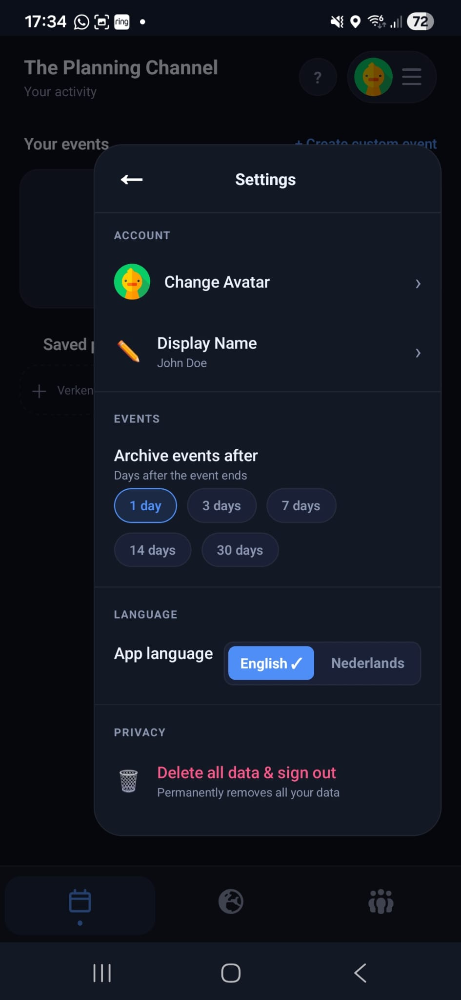
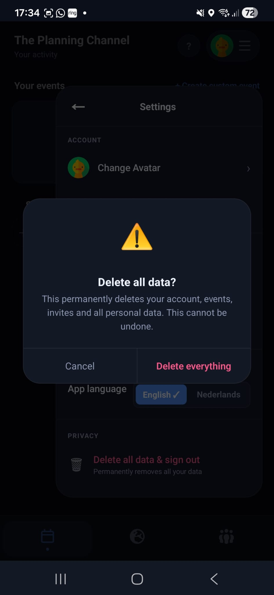

The Planning Channel gives you full control over your account and personal data. You can permanently delete your account and all associated data from directly inside the app — no email request required.
How to delete your data
Open The Planning Channel on your Android device.
Go to the Settings screen from the main menu.
Scroll down to the Account section and tap Delete account.

Step 1 — Tap "Delete account" in Settings.
A confirmation dialog will appear explaining what will be removed. Tap the Confirm button to proceed.

Step 2 — Confirm the deletion.
What gets deleted
When you confirm deletion, the following data is permanently removed from our servers:
Your account and phone number authentication record
Your profile (display name, avatar, language preference)
Events you created, along with their invitations and RSVPs
Groups you own and your group memberships
Saved locations and places
Push notification tokens linked to your device
What is kept
For the integrity of shared plans, a limited amount of information may remain visible to other users after deletion:
Messages or event activity shared with other participants remain in their own event history, but are no longer linked to your profile.
Anonymised technical logs required for security and abuse prevention may be retained for a short period, as described in our Privacy Policy.
This action is permanent. Once confirmed, your account cannot be restored. If you want to use the app again later, you will need to sign up as a new user.
Need help?
If you are unable to access the app or need assistance with deletion, contact us at theplanningchannel@gmail.com and we will process your request manually within 30 days.